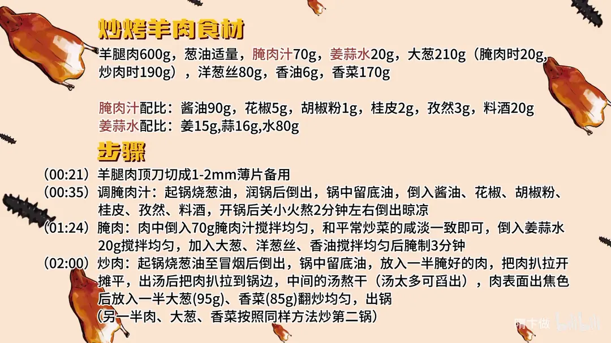

炒烤羊肉
隋卞一做。羊腿肉 600g 顶刀切 1–2mm 薄片，用酱油、孜然、桂皮等熬成的腌肉汁 70g 加姜蒜水腌 3 分钟；大火下锅把肉摊平、把汤煎干，肉面出焦色后下大葱、香菜翻匀，炒出的焦香就是「烤」味。
原视频：https://www.bilibili.com/video/BV1EM4m117jq
食材
羊腿肉、葱油 等 18 样
| 类别 | 用料 | 用量 |
|---|---|---|
| 主料 | 羊腿肉 | 600g |
| 葱油 | 葱油 | 适量 |
| 腌肉汁 | 酱油 | 90g |
| 腌肉汁 | 花椒 | 5g |
| 腌肉汁 | 胡椒粉 | 1g |
| 腌肉汁 | 桂皮 | 2g |
| 腌肉汁 | 孜然 | 3g |
| 腌肉汁 | 料酒 | 20g |
| 姜蒜水 | 姜 | 15g |
| 姜蒜水 | 蒜 | 16g |
| 姜蒜水 | 水 | 80g |
| 腌肉 | 腌肉汁 | 70g |
| 腌肉 | 姜蒜水 | 20g |
| 腌肉 | 大葱 | 20g |
| 腌肉 | 洋葱丝 | 80g |
| 腌肉 | 香油 | 6g |
| 炒制 | 大葱 | 190g |
| 炒制 | 香菜 | 170g |
步骤
- 切肉：羊腿肉顶刀切成 1–2mm 的薄片备用。
- 调腌肉汁：起锅烧葱油，润锅后倒出，锅中留底油，倒入 90g 酱油、5g 花椒、1g 胡椒粉、2g 桂皮、3g 孜然、20g 料酒，开锅后关小火熬 2 分钟左右，倒出晾凉。
- 腌肉：肉中倒入 70g 腌肉汁搅拌均匀，咸淡和平常炒菜的咸淡一致即可；倒入 20g 姜蒜水搅拌均匀，加入 20g 大葱、80g 洋葱丝、6g 香油搅拌均匀后腌制 3 分钟。
- 烧葱油：另起锅烧葱油至冒烟后倒出，锅中留底油。
- 炒肉：放入一半腌好的肉，把肉扒拉开摊平；出汤后把肉扒拉到锅边，让中间的汤煎干（汤太多可舀出），肉表面出焦色后放入一大半大葱（95g）、香菜（85g）翻炒均匀，出锅。
- 炒第二锅：另一半肉、大葱、香菜按照同样的方法炒第二锅。
小贴士
- 肉片要顶刀切薄，1–2mm 才好快速出水、快速出焦，切厚了容易炖成一锅汤。
- 腌肉汁里不放盐，靠 90g 酱油定咸味，拌肉时尝一下，和平常炒菜咸淡一致即可。
- 分两锅炒，每锅的肉量少，锅温才掉不下来，才有「烤」的焦香。
讲解要点
难度：★★★☆☆（难点是熬腌肉汁和控制锅温，要让肉出焦香又不能出一锅汤）
为什么这么做
- 顶刀切 1–2mm：片薄才能快速出水、快速受热出焦；切厚容易「炖」成一锅汤，还嚼不动。
- 先熬一锅腌肉汁：酱油里加花椒、桂皮、孜然、胡椒粉小火熬两分钟，香料味溶进酱油；料酒后放，熬一下让酒味挥发、只留酒香，这是给肉打底的复合味汁。
- 只用酱油定咸、不再放盐：腌汁的咸度按平常炒菜的咸淡来，再加盐就过了。
- 姜蒜水打进肉里：肉把水吃进去更嫩，姜蒜同时去膻。
- 只腌 3 分钟：片薄入味快，久腌反而出水、肉变散。
- 摊平不动、把汤煎干：摊平是模仿铁板，让肉尽快受热、少出汤；把肉扒到锅边让中间的汤煎干，锅温回升，肉面才出焦色——这就是「烤」味的来源。
- 葱和香菜要多：它们提供甜味和脆感，也靠自身水分给锅降温，和焦香的肉形成层次。
容易翻车
- 肉切厚、一锅下太多，锅温掉下来，肉变成水煮，出不了焦香。
- 汤没煎干就下葱和香菜，整锅水塌塌的，葱香菜也塌陷出水。
- 锅没润透、油温不够就下肉，肉粘锅、扒拉不开。
- 肉下锅后频繁翻动，摊不平就受热不均，出不了焦色。
热评补充
- 有观众用猪肉替代羊肉：头天晚上用盐、味精、葱、酱油、胡椒、蒜、黄酒抓匀，加一点粉、油封住，冷藏腌一夜，第二天两面煎黄，撒孜然辣椒翻匀，思路和这道菜一致。
- 也有观众提到，炖羊肉时习惯放萝卜同煮吸膻，萝卜炖完照样能吃，可作为去膻的参考。
原片尾卡

原片文案
AI 字幕校准稿
这种菜就得刚出锅的时候最好吃，非常还原店里的味道，近似占了 90% 左右，不开玩笑。北京有几家卖烤肉特别牛，但咱们在家里做没有铁板，教你们一个在家做的版本——炒烤羊肉。羊肉选这种肥瘦的就行，然后顶刀切片，能切多薄切多薄，一毫米、两毫米都可以，太厚了怕你嚼不动。
下一步就跟你们平时在家做的不一样了，咱们要先熬一个腌肉的汁。锅里放上葱油润一下，一勺酱油，花椒、桂皮、孜然、胡椒粉，比例不用记，会放到片尾。你看锅里边酱油边上有一圈油，一会开锅之后就不容易扒在锅上。开锅之后关小火，让它慢慢熬，把香料的味道熬到酱油里边去，大约熬两分钟，这就是一个复合的调味汁儿。然后里边倒点料酒，熬一下酒的那种过重的味道就会挥发一部分，留在汤汁里边是一个香味。熬好了之后把它放到盆里晾凉。
把切好的肉放到盆里，加上我们熬好的酱油汁，这个色应该就够味了。然后里边要加点姜蒜水，具体的比例放到片尾，继续搅拌，让羊肉把这水吃进去。加入一部分葱、洋葱，再放香油。这个肉弄好之后腌上 3 分钟就可以炒了。
炒锅上火，热锅凉油，一定要把锅润透，烧到油冒烟，然后把油倒出去，看锅底下就这么一点点油。咱们家庭就这么大的灶，这些肉得分两锅做，一锅会出很多汤。把肉放进去，拿勺子往边上扒拉，让它摊平，这个动作很关键，摊平就是为了模仿铁板，让它尽快成熟，减少汤汁的流出。
下一个动作很关键：把肉往边上扒拉，把中间这底亮出来，看底都是出的汤，不用搭理它，一会这汤熬没了，肉表面就已经出那个焦色了，这个就有铁板烤的那种感觉了。然后放入大葱还有香菜，这烤肉好吃的第二个秘密就是葱和香菜要多，香菜一塌陷就可以出了。有没有那铁板烤的意思？出锅。
它非常接近那种炙子烤肉，吃着特别的干，但它不柴，因为干，所以里面那种香料的味道最大程度地出来了，完全附在羊肉里面，然后你还能吃到葱和香菜的甜。三个关键点一定要把握好：第一是这个汁儿怎么熬，第二是他的炒法，第三是葱和香菜一定要多。大家学到了就给我们点个赞吧，谢谢大家。